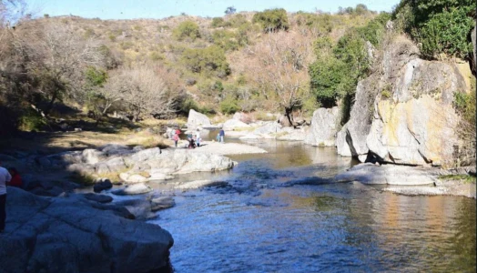

TU REGIÓN. NUEVAS EXPERIENCIAS.
Naturaleza, cultura y experiencias en nuestra región.
Explorar el mapa
UNA REGIÓN POR DESCUBRIR

Descubrí.
Encontrá atractivos y eventos en toda la región.
Organizá.
Combiná experiencias y armá tu propio recorrido.
Explorá.
Viví la región metropolitana a tu manera.
MAPA TURÍSTICO METROPOLITANO
Una región entera para explorar
Atractivos, eventos y escapadas para descubrir qué hacer cerca.
Atractivos Eventos Senderos
Vista esquemática de referencia
V4.4 · Entorno de pruebas · muestra de la planilla auditada · las ubicaciones aproximadas requieren confirmación.
DESCUBRÍ EL TERRITORIO
Una región, muchas identidades
Descubrí los paisajes, la cultura y las experiencias que hacen única a cada localidad.